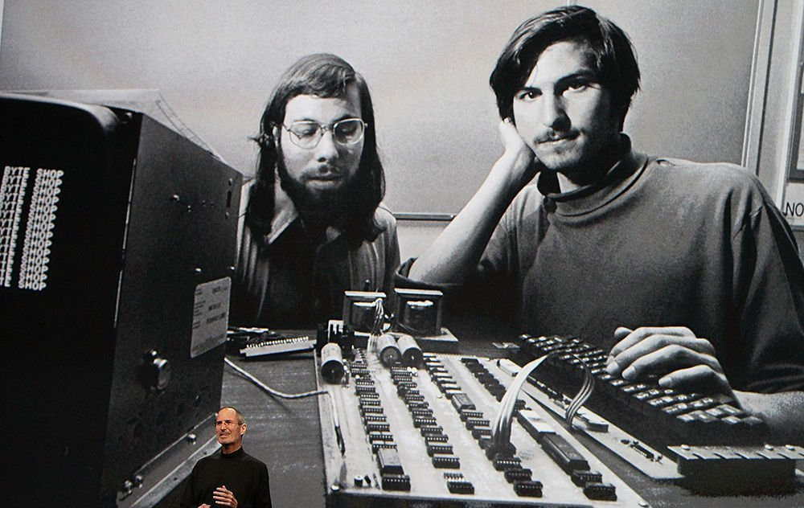

Infancia
La infancia de Steve Jobs, el icónico fundador de Apple, estuvo marcada por una serie de eventos y circunstancias que influyeron profundamente en su vida y personalidad. Steve Jobs nació el 24 de febrero de 1955 en San Francisco, California. Aunque su origen biológico fue un tanto complejo, ya que sus padres biológicos, Abdulfattah Jandali y Joanne Carole Schieble, estudiantes universitarios en ese momento, decidieron darlo en adopción. Fue adoptado por Paul Jobs y Clara Hagopian, una pareja de clase media. Aunque Jobs siempre negó que su adopción lo afectara, su carácter ambivalente y su búsqueda de independencia se relacionaron con este hecho. Desde niño, sus padres adoptivos le inculcaron la creencia de que era alguien especial. Le dijeron que había sido elegido y que su adopción no era un signo de rechazo, sino una bendición. Este mensaje dejó una huella profunda en Jobs y contribuyó a su confianza y determinación a lo largo de su vida. Su interés por la tecnología comenzó temprano. Su padre, Paul Jobs, era mecánico de la Guardia Costera y compartió con él su pasión por la electrónica. La California de los años sesenta, con su mezcla de revolución hippie y el nacimiento de la industria tecnológica en Silicon Valley, también influyó en su curiosidad. Jobs desarrolló una afinidad por el diseño minimalista desde joven. Esto se reflejaría más tarde en los productos de Apple, conocidos por su elegancia y simplicidad. Su enfoque en la estética y la usabilidad se originó en parte en su infancia y en su aprecio por la belleza funcional.

Estudios
Steve Jobs,no completó sus estudios universitarios de manera convencional. Después de graduarse de la escuela secundaria Homestead en Cupertino, California, en 1972, Jobs asistió brevemente al Reed College en Oregón. Sin embargo, abandonó la universidad después de un semestre debido a la carga financiera que representaba para sus padres adoptivos. A pesar de no haber obtenido un título universitario, Jobs continuó asistiendo a clases que le interesaban de manera no oficial. Se sumergió en sus pasiones personales, como la caligrafía y la programación de computadoras, que más tarde influyeron en su enfoque innovador en el diseño de productos de Apple. La decisión de Jobs de abandonar la universidad no impidió su éxito posterior en la industria tecnológica. Su carrera se centró en la creatividad, la visión empresarial y la pasión por la tecnología, y estos aspectos fueron fundamentales en el desarrollo de Apple y en su impacto en la computación y la industria de la tecnología.
Impacto en el area de computacion
El impacto de Steve Jobs en el área de la computación radica en su capacidad para revolucionar la industria mediante la introducción de productos innovadores y la creación de una cultura empresarial centrada en el diseño y la experiencia del usuario. Jobs fue un visionario que transformó la forma en que interactuamos con la tecnología, contribuyendo significativamente a la popularización de las computadoras personales y dispositivos digitales. Su enfoque en el diseño estético, la simplicidad y la integración de hardware y software definió nuevas normas en la industria. Además, Jobs lideró el desarrollo de productos icónicos como el Macintosh, iPod, iPhone e iPad, que no solo fueron comercialmente exitosos sino que también influyeron en la dirección futura de la tecnología y la cultura digital. Su legado perdura en la forma en que concebimos y utilizamos la tecnología en la actualidad.